library(tidyverse)
library(here)
library(ggplot2)
pga <- read_csv(here("posts", "Post3", "pgafulldata.csv"))
# get rid of players without Scoring Averages
pga <- pga |> filter(!is.na(`Scoring Average`))Introduction
For this post, I’m exploring some PGA Tour data in hopes to uncover which parts of the golf game is most important. I am around a 5 or 6 handicap, and I’m hoping to be able to figure out what I should prioritize working on the most to improve my game. To answer this question, I’ve chosen 5 variables to look at. These are Driving Distance, Driving Accuracy(% of fairways you hit), Iron Accuracy(% of greens in regulation you hit from the fairway), Scrambling(% of the time you make par after missing the green in regulation), and Number of Putts per round. I think these with these 5 stats, I’m able to cover all the key aspects of the game well(Driving, Irons, and Short Game).
The data set I’m working with is from Kaggle, called PGA Tour Top 200 Player Data (2015-2019). It contains the PGA Tour statistics from the top 200 players across 5 years (2015-2019) for a total of 1497 observations. However, a lot of these have missing values, I’m assuming this due to some players not having played in enough rounds. After we remove these, we are left with 936 observations.
Driving
First, we will look at some data about Driving the Ball:
ggplot(data = pga, aes(x = `Driving Distance`, y = `Scoring Average`)) +
geom_point() +
geom_smooth() +
theme_minimal() +
labs(title = "How Does Driving Distance affect Scoring", x = "Driving Distance (yards)")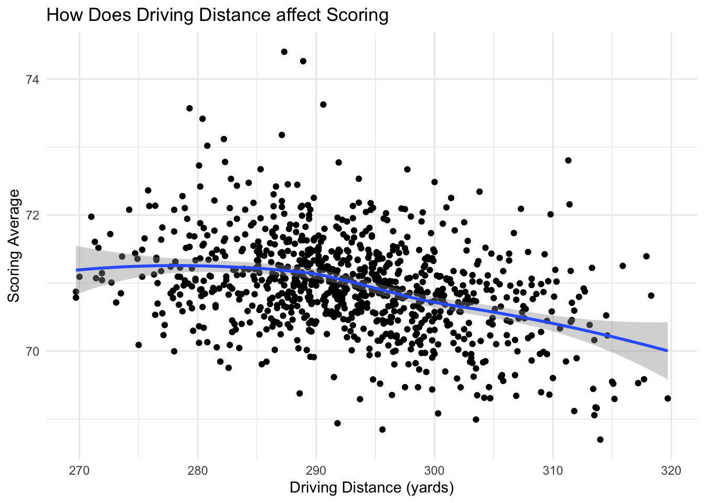
The first thing to look at in terms of Driving is how far you hit the ball. This plot shows that in general, the further you can hit the ball the lower you score. It’s interesting however, the players who hit the ball less than 290 yards all seem to be around the same. However, once you get over that 290 yard threshold the further you hit it the better you score. This indicates for casual golfers who probably don’t hit the ball as far as the pros, Driving distance isn’t as important.
ggplot(data = pga, aes(x = `Driving Accuracy Percentage`, y = `Scoring Average`)) +
geom_point() +
geom_smooth() +
theme_minimal() +
labs(title = "How Does Driving Accuracy affect Scoring", x = "% of Fairways Hit")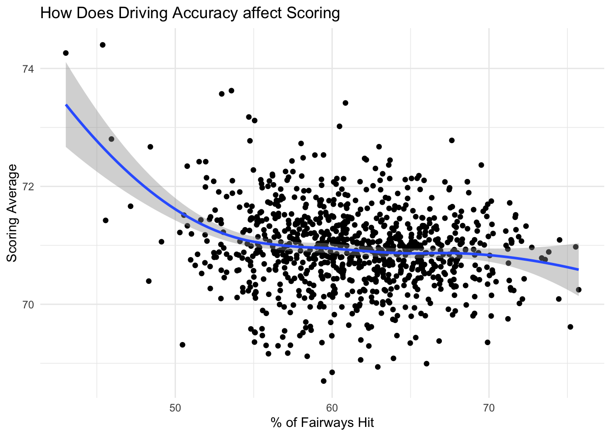
The next thing we can look at in terms of Driving is the accuracy. Here we have a few outliers on the low end of accuracy, but other than that there doesn’t seem to be that much of a relationship. It appears out of the 2, distance definitely has more of an effect on your score(at least for pros).
Iron Play
ggplot(data = pga, aes(x = `GIR Percentage from Fairway`, y = `Scoring Average`)) +
geom_point() +
geom_smooth() +
theme_minimal() +
labs(title = "How Does Iron Play affect Scoring")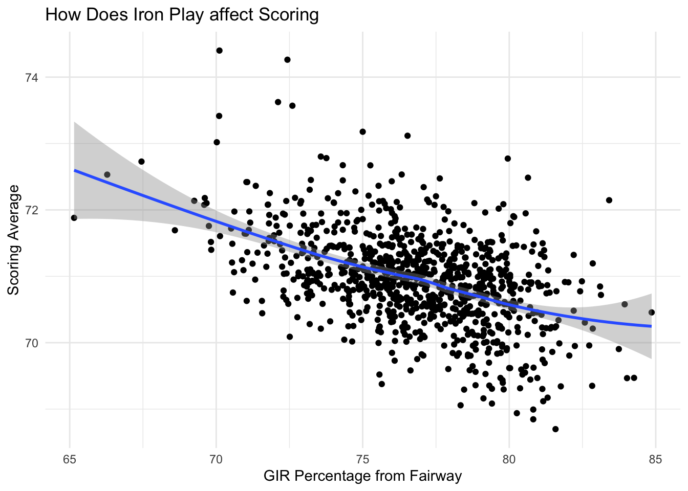
Now looking at irons. This plot is measuring the Green in Regulation percentage from the fairway. There seems to be a strong relationship here. The more you hit the green, the lower you score. Out of the three things we’ve looked at so far, this definitely has the most effect. It tells us that capitalizing off good drives and giving yourself birdie chances on the green is very important.
Short Game
ggplot(data = pga, aes(x = `Putts Per Round`, y = `Scoring Average`)) +
geom_point() +
geom_smooth() +
theme_minimal() +
labs(title = "How Does Putting affect Scoring")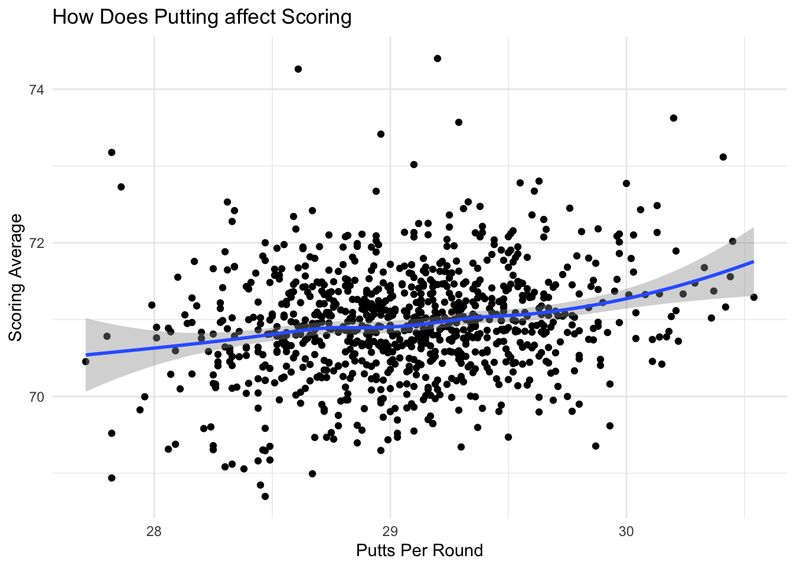
Now moving onto short game, the first thing we can look at is putting. There seems to be a semi-strong relationship here. The more you have to putt, the higher you shoot. However, putting doesn’t seem to have as much of an effect as iron play did. This is a little suprising to me, going into this I expected short game areas to have the most impact.
ggplot(data = pga, aes(x = Scrambling, y = `Scoring Average`)) +
geom_point() +
geom_smooth() +
theme_minimal() +
labs(title = "How Does Scrambling effect Scoring", x = "Scrambling %", caption = "Scrambling % is how often you make a par after missing the green")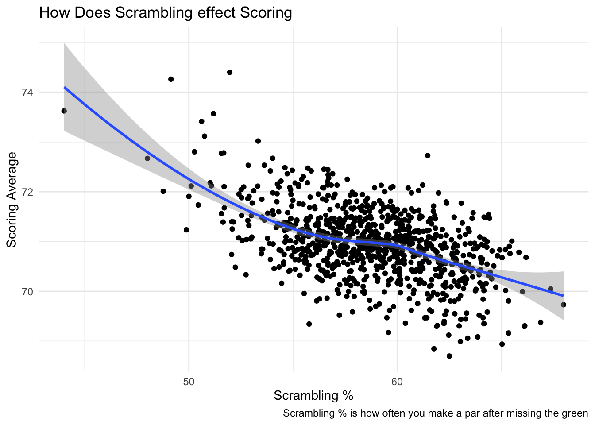
The second thing we can look at for short game is scrambling percentage. It looks like scrambling has a pretty big effect on scoring, potentially the biggest so far. The better you are at scrambling, the better you shoot. This is what I expected at the start. Scrambling allows you to save yourself in bad situations. It saves a bunch of shots because it not only prevents blow up holes, but allows you to steal some shots back where you probably don’t deserve them.
What Seperates Elite Scorers from Average Scorers from Below Average Scorers
The next things we can explore with these 5 stats are how they separate Elite players, average players, and below average players(in terms of the PGA Tour). To do this I am going to split the data into 3 groups. The top 1/3 in scoring average, the middle 1/3, and the bottom 1/3.
# get the thresholds
quantile(pga$`Scoring Average`, probs = c(1/3, 2/3), na.rm = TRUE)33.33333% 66.66667%
70.70600 71.19467 # group players into the three groups by the thresholds
pga <- pga |> arrange(`Scoring Average`) |>
mutate(
group = case_when(`Scoring Average` < 70.706 ~ "elite",
`Scoring Average` >= 70.706 & `Scoring Average` < 71.195 ~ "average",
`Scoring Average` >= 71.195 ~ "below average"),
group = factor(group, levels = c("elite", "average", "below average")))Driving
ggplot(data = pga, aes(x = group, y = `Driving Distance`, fill = group)) +
geom_boxplot() +
scale_fill_manual(values = c(
"elite" = "#009E73",
"average" = "#F0E442",
"below average" = "#D55E00"
)) +
theme_minimal() +
labs(title = "Driving Distance for Different levels of players on Tour", x = "") +
theme(legend.position = "none")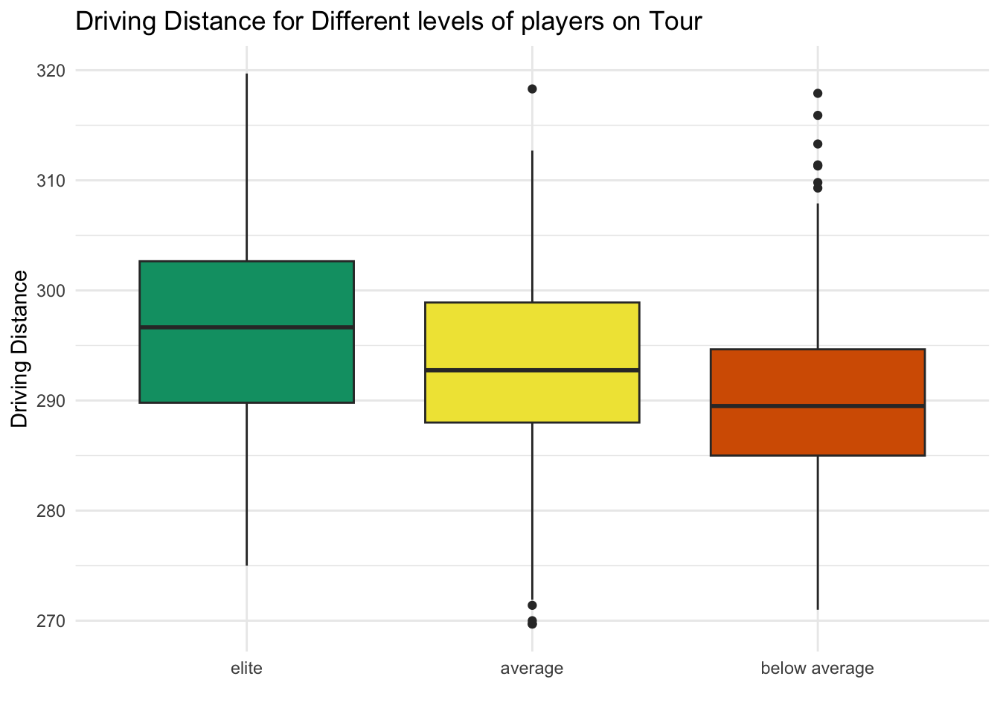
Looking at driving distance again, the drop offs from elite to average to below average are all pretty similar. This plot further supports the idea that driving distance has an strong effect on scoring average. The best players hit the ball farther than the others.
ggplot(data = pga, aes(x = group, y = `Driving Accuracy Percentage`, fill = group)) +
geom_boxplot() +
scale_fill_manual(values = c(
"elite" = "#009E73",
"average" = "#F0E442",
"below average" = "#D55E00"
)) +
theme_minimal() +
labs(title = "Driving Accuracy for Different levels of players on Tour", x = "") +
theme(legend.position = "none")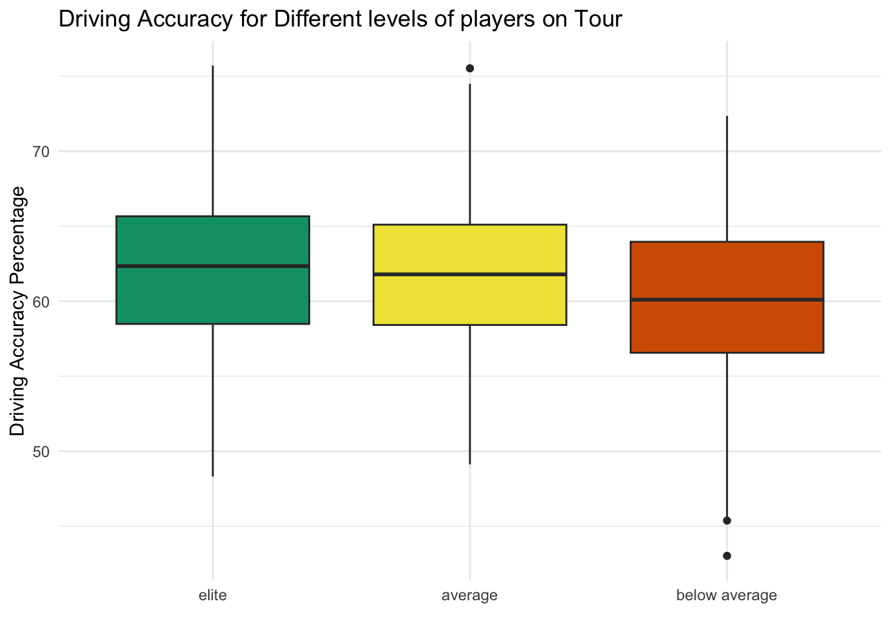
Similar to the scatterplots, driving accuracy doesn’t seem to have as much of an effect as distance does. There is a little drop off for below average players, but not much difference between elite and average ones. This could tell you that driving accuracy could be important for worse players, but once you get decent at it, other things become more important.
Iron Play
ggplot(data = pga, aes(x = group, y = `GIR Percentage from Fairway`, fill = group)) +
geom_boxplot() +
scale_fill_manual(values = c(
"elite" = "#009E73",
"average" = "#F0E442",
"below average" = "#D55E00"
)) +
theme_minimal() +
labs(title = "Iron Play for Different levels of players on Tour", x = "") +
theme(legend.position = "none")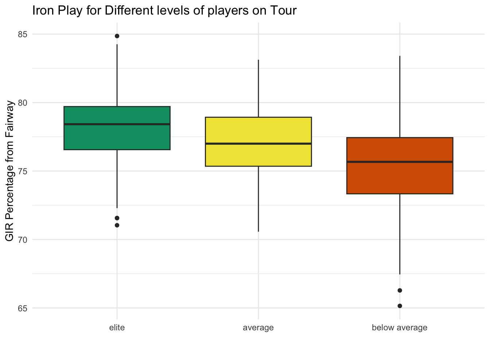
Iron play also has similar drop offs. Much like the scatterplot showed, it seems the better players are better with their irons.
Short Game
ggplot(data = pga, aes(x = group, y = Scrambling, fill = group)) +
geom_boxplot() +
scale_fill_manual(values = c(
"elite" = "#009E73",
"average" = "#F0E442",
"below average" = "#D55E00"
)) +
theme_minimal() +
labs(title = "Scrambling for Different levels of players on Tour", x = "") +
theme(legend.position = "none")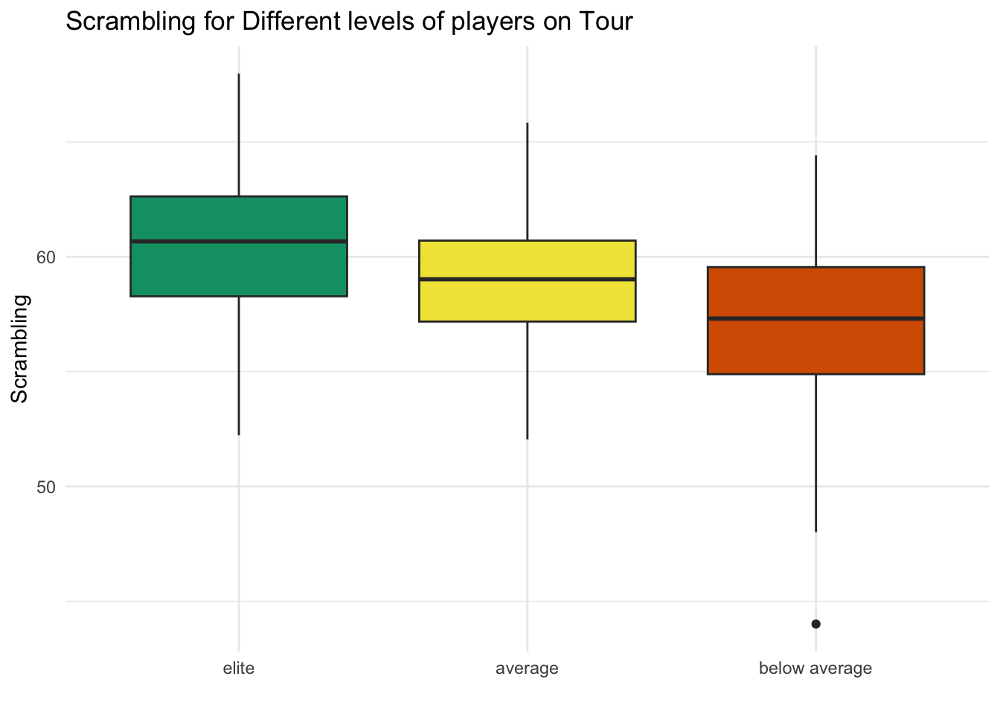
Scrambling also seems to have pretty stead drop offs. It seems like the best players can scramble around the greens. Similarly to what the scatterplot showed, scrambling seems to have a big impact.
ggplot(data = pga, aes(x = group, y = `Putts Per Round`, fill = group)) +
geom_boxplot() +
scale_fill_manual(values = c(
"elite" = "#009E73",
"average" = "#F0E442",
"below average" = "#D55E00"
)) +
theme_minimal() +
labs(title = "Putting for Different levels of players on Tour", x = "") +
theme(legend.position = "none")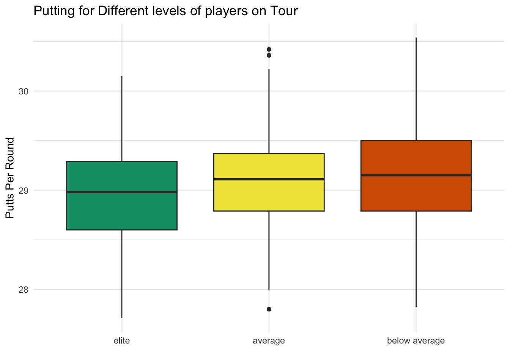
Lastly, the putting is interesting. The dropoffs are pretty small, especially from average to below average. It once again supports the idea that putting isn’t as important, which is very surprising to me.
Now that we have looked at all these plots, my takeaways so far are that Distance, Irons, and scrambling have the biggest effects. While putting and accuracy off the tee don’t matter quite as much. Now, lets compare all of these stats to see which one is the most important. The way I will do this is by calculating how many strokes per round each skill can save you.
We can keep the idea of grouping players into 3 groups, but this time we can do it based off whether they are elite, average, or below average at each individual stat we have been looking at, instead of their scoring average. Then we can calculate the amount of shots you can save by going from below average at something, to elite at something by subtracting the median scoring average from the groups.
Strokes Saved
# get the thresholds for each stat
quantile(pga$`Driving Distance`, probs = c(1/3, 2/3), na.rm = TRUE)33.33333% 66.66667%
289.2000 296.6333 quantile(pga$`Driving Accuracy Percentage`, probs = c(1/3, 2/3), na.rm = TRUE)33.33333% 66.66667%
59.20667 63.70000 quantile(pga$`GIR Percentage from Fairway`, probs = c(1/3, 2/3), na.rm = TRUE)33.33333% 66.66667%
75.86 78.34 quantile(pga$Scrambling, probs = c(1/3, 2/3), na.rm = TRUE)33.33333% 66.66667%
57.52333 60.29667 quantile(pga$`Putts Per Round`, probs = c(1/3, 2/3), na.rm = TRUE)33.33333% 66.66667%
28.86 29.28 # make the group variables for each stat
pga <- pga |> mutate(
Distance_group = case_when(`Driving Distance` > 296.63 ~ "elite",
`Driving Distance` <= 296.63
& `Driving Distance` > 289.2 ~ "average",
`Driving Distance` < 289.2 ~ "below average"),
Accuracy_group = case_when(`Driving Accuracy Percentage` > 63.7 ~ "elite",
`Driving Accuracy Percentage` <= 63.7
& `Driving Accuracy Percentage` > 59.21 ~ "average",
`Driving Accuracy Percentage` < 59.21 ~ "below average"),
Irons_group = case_when(`GIR Percentage from Fairway` > 78.34 ~ "elite",
`GIR Percentage from Fairway` <= 78.34
& `GIR Percentage from Fairway` > 75.86 ~ "average",
`GIR Percentage from Fairway` < 75.86 ~ "below average"),
Scrambling_group = case_when(Scrambling > 60.3 ~ "elite",
Scrambling <= 60.3
& Scrambling > 57.52 ~ "average",
Scrambling < 57.52 ~ "below average"),
Putting_group = case_when(`Putts Per Round` < 28.86 ~ "elite",
`Putts Per Round` >= 28.86
& `Putts Per Round` < 29.28 ~ "average",
`Putts Per Round` > 29.28 ~ "below average"),
)
# find how many shots each skill saves per round
# subtract the median scoring avg of elite players from below avg players for each statistic
shots_saved <- pga |> summarise(
Driving_Distance = median(`Scoring Average`[Distance_group == "below average"], na.rm = TRUE) -
median(`Scoring Average`[Distance_group == "elite"], na.rm = TRUE),
Driving_Accuracy = median(`Scoring Average`[Accuracy_group == "below average"], na.rm = TRUE) -
median(`Scoring Average`[Accuracy_group == "elite"], na.rm = TRUE),
Iron_Accuracy = median(`Scoring Average`[Irons_group == "below average"], na.rm = TRUE) -
median(`Scoring Average`[Irons_group == "elite"], na.rm = TRUE),
Scrambling = median(`Scoring Average`[Scrambling_group == "below average"], na.rm = TRUE) -
median(`Scoring Average`[Scrambling_group == "elite"], na.rm = TRUE),
Putting = median(`Scoring Average`[Putting_group == "below average"], na.rm = TRUE) -
median(`Scoring Average`[Putting_group == "elite"], na.rm = TRUE)
)
shots_saved <- shots_saved |> pivot_longer(
cols = everything(), names_to = "Skill", values_to = "Strokes_Saved"
) So What Matters Most?
ggplot(data = shots_saved, aes(x = Strokes_Saved, y = reorder(Skill, Strokes_Saved))) +
geom_segment(aes(xend = 0, yend = Skill), color = "#009E73") +
geom_point(color = "#009E73") +
geom_text(aes(label = round(Strokes_Saved, 2)), hjust = -0.5) +
scale_x_continuous(expand = expansion(mult = c(0, 0.2))) +
theme_minimal() +
labs(title = "What Skills are Most Important", y = "Skill", x = "Strokes Saved per Round") +
scale_color_viridis_d()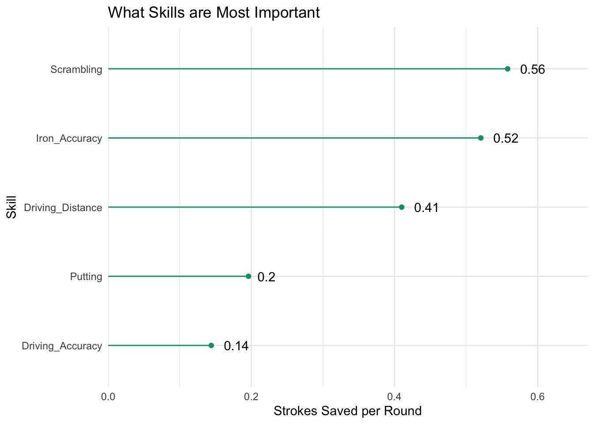
According to our plot, scrambling is the most important skill in golf. At the tour level, going from below average to elite can save you over 0.5 shots per round. Like we suspected, iron accuracy and driving distance are also important, then we have a little drop off before we get to putting and driving accuracy.
Conclusion
We have learned that scrambling is the most important skill in golf, followed by iron accuracy, driving distance, putting, then driving accuracy. This is along the lines of what I expected, with the exception of putting being pretty low.
I have a couple theories regarding as to why putting is so low. This data is on PGA Tour players, not average golfers. Everyone on tour is obviously extremely good at putting, I think putting might have more of an impact, the worse you are at golf. While 2 putting vs 1 putting some of the time might not mean that much in the long run for pros, an amateur might be more prone to 3 or 4 putting, which would have a drastically increased effect on their score. I would love to be able to continue researching these 5 statistics at a non PGA level to see what changes.
This logic could apply to all these statistics as well, not just putting, however I would guess the order of importance would stay mostly the same. I think the biggest difference is that the spread of pros is so tight, that the difference between good vs bad and the amount of strokes being saved for them is much smaller than it is for us. However, the better you get, the closer you would follow these results.
I had posed the question to myself at the start of what aspect of my game I should focus on improving. I would select one of the top 3(Scrambling, Iron accuracy, or Driving Distance), as they seem to be the most impactful. Remember, even if all 5 look relatively close currently, the spread of them will increase on a non pro level. For me, scrambling is the best part of my game, I am also pretty good with my irons so out of the top 3, distance is my weakest skill. So I have my answer.
Connection to Data Visualization
So how does all of this connect to ideas of Data Visualization? The main visualization decisions I had to make was how to effectively display what I needed to come to a conclusion to my question. For the first set of plots, I was looking at each individual statistic compared to scoring average. That is two quantitative variables, so the logical choice was a scatterplot. I also added a smoother to show the relationship. It was important to not have it be linear to allow us to see things like plateaus.
For the second set of plots, we had broken up the players into groups based of scoring average, and we were comparing the groups for each skill. That means we had a quantitative variable and a categorical variable. Side by Side Boxplots were a good choice because they allowed us to compare the three groups, while allowing us to see things like spread and outliers if needed.
For the last plot, I went with a lollipop plot because we had 5 different skills, each with one value(shots saved) to display. I also used some other data visualization ideas throughout this. For example, I used sort of a diverging color scale for the boxplots(green for elite, yellow for average, and red for below average) while ensuring that they were color blind friendly. I also added labels to the final lollipop plot with geom_text() to make it a little easier to read.